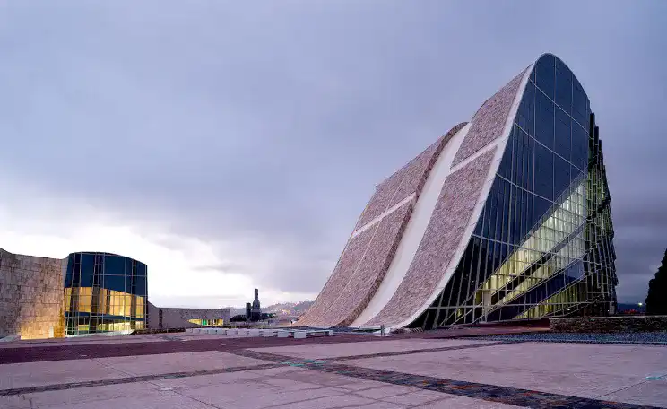
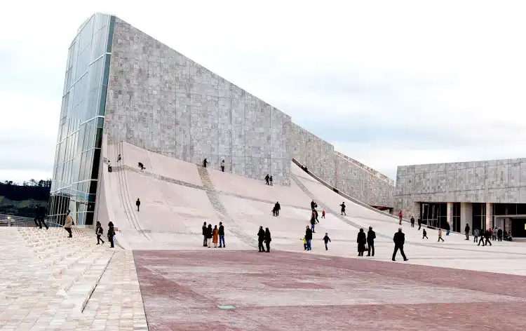

Cité Culture Galice
La Cité de la Culture de Galice, située à Santiago de Compostela, en Espagne, est un exemple remarquable d'architecture contemporaine qui fusionne l'histoire et l'innovation. Conçu par l'architecte américain Peter Eisenman, ce complexe culturel unique s'étend sur une superficie de 141 800 mètres carrés et se compose de plusieurs bâtiments qui incarnent une vision avant-gardiste. Malgré son esthétique audacieuse, la Cité de la Culture de Galice est conçue pour s'intégrer harmonieusement à la topographie galicienne. Les bâtiments semblent émerger naturellement du sol, établissant un dialogue subtil entre la modernité architecturale et le contexte historique et naturel de la région.
Le complexe comprend plusieurs édifices significatifs, tels que la Bibliothèque et Archives de Galice, le Musée des Beaux-Arts, le Centre d'Art International et le Centre Dramatique Galicien. Chacun de ces bâtiments est une œuvre architecturale en soi, avec des caractéristiques uniques qui reflètent la diversité culturelle du lieu. Les matériaux utilisés, tels que l'acier, le granit et le verre, sont choisis pour leur durabilité et leur esthétique moderne. Les textures contrastées des surfaces créent un jeu de lumière dynamique qui évolue tout au long de la journée, ajoutant une dimension artistique à l'ensemble.
